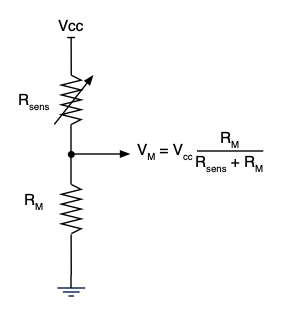

Subsection 14.1.3 The Voltage Divider Interface
An ADC measures voltage, not resistance. To read a photocell, place it in series with a fixed resistor between the supply voltage and GND. The voltage at the midpoint — called \(V_M\) — is:
\begin{equation*}
V_M = V_{cc} \cdot \frac{R_M}{R_{sens} + R_M}
\end{equation*}
where \(R_{sens}\) is the photocell and \(R_M\) is the fixed resistor. As light increases, \(R_{sens}\) decreases, so \(V_M\) increases. Swapping the two positions reverses the direction — useful if you need the voltage to go the other way.

In this chapter you will build a simplified solar tracker — a device that rotates a servo arm to face a light source. Real industrial solar trackers compute the sun’s position from the date, time, and GPS coordinates and drive the panel to that angle mathematically — no light sensor required; in the two-photocell approach here you implement a feedback loop: your code reads both sensors, computes the difference, and commands the servo to rotate in whichever direction reduces it. The principle is simple: two photocell voltage dividers are mounted at opposite ends of the servo arm, and their ADC readings are subtracted. When both see equal light the difference is zero and the servo holds still. When the light source shifts to one side, one photocell brightens and the other dims, and the signed difference tells your code which way to rotate the servo.